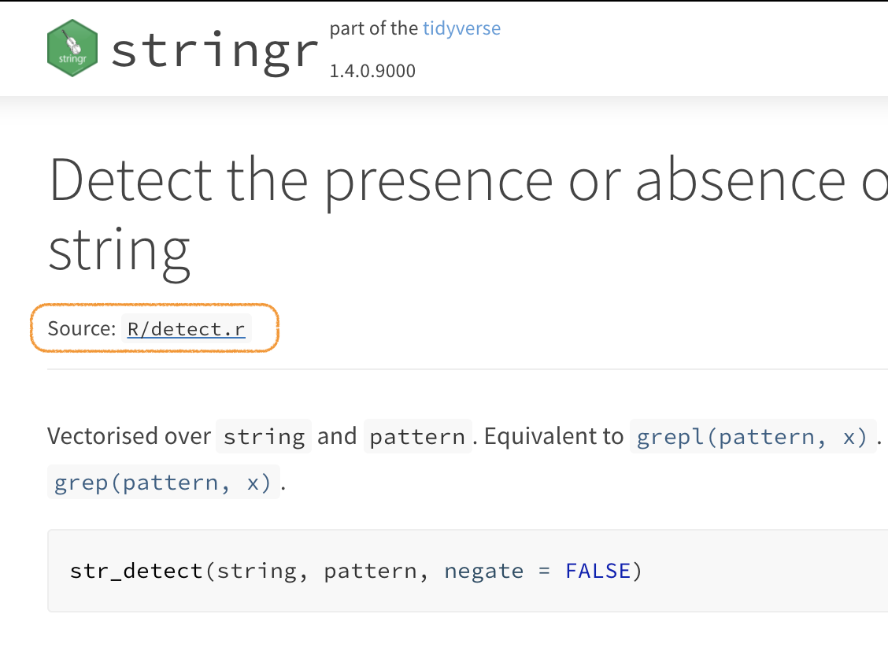

If you’ve ever noticed, at the top of any Tidyverse documentation page is a link to the source file for the functions described on the page.

This level of out-there transparency may or may not be what you want in your blog. But it’s especially useful in a work context.
Consider the scenario:
Now we all know that’s not the end of the story; it only means he’s found the file! But finding the file that easily is not at all trivial in a multi-team environment.
So I’ve implemented these little links at work, and I’ve done it here as well. It’s actually pretty easy to do.
It takes no more than 6 steps—counting liberally. After we walk through those steps, I’ll explain how they work.
In config/_default/params.toml find this line
and ensure it’s accurate:
# Enable visitors to edit pages?
# `repo` defines the repository URL. `editable` defines which page types can be edited.
edit_page = {repo_url = "https://github.com/BenjaminWolfe/benjamin", content_dir = "", repo_branch = "main", editable = {docs = true, page = false, post = false}}Add these lines after it:
# Show source links?
# `source_path` is everything between `repo_url` and `repo_branch` (above)
# in the link to an Rmd, ipynb, or md file. It varies from provider to provider.
show_source_links = true
source_path = "/blob/"Find the file themes/hugo-academic/layouts/partials/page_metadata.html
and copy it to layouts/partials/page_metadata.html.
(That is, copy it from themes/hugo-academic into the root of your site.)
This is how you override a template in Hugo;
that way if you update your Hugo Academic theme, you won’t lose your changes.
At the top of the file after $is_list and $page are defined,
add this line:
{{ $source_url := print $page.File.Dir $page.File.BaseFileName ($page.Params.source_extension | default ".md") }}Then, after the section on article reading time, add this code block:
{{ if and (site.Params.show_source_links) (eq $page.Type "post") }}
<span class="middot-divider"></span>
<span class="source-reference">
<a href="{{ site.Params.edit_page.repo_url }}{{ site.Params.source_path }}{{ site.Params.edit_page.repo_branch }}/content/{{ $source_url }}" target="_blank" rel="noopener">{{ $source_url }}</a>
</span>
{{ end }}Finally, when you start each post, include this in the YAML:
source_extension: '.Rmd'I think the Hugo docs are actually really intuitive and user-friendly, on a par maybe with the Tidyverse and jQuery docs. Reading through them even cursorily gives you a pretty good sense of how things work.
Anything you put in config/_default/params.toml is accessible
with site.Params.your_lowercase_toml_parameter.
site.Params.show_source_links and site.Params.source_path,
parameters you’ve just added yourself.site.Params.edit_page.repo_url and site.Params.edit_page.repo_branch.Anything you put in the YAML headers of a file are accessible
with .page.Params.your_lowercase_yaml_parameter.
The accessor is slightly different in our code—it starts with $p
instead of .p—only because $page is defined as equal to .page
a few lines earlier.
This is where $page.Params.source_extension comes from.
Note that if you are sure you’ll always be writing .Rmd files,
you can hard-code this into the template!
Then you can skip adding the parameter to your post headers.
Adding the parameter to the YAML means this same link can work for R Markdown, Jupyter Notebooks, or plain old markdown files.
$page.File.Dir and $page.File.BaseFileName are built-in page attributes,
documented straightforwardly in the Hugo docs.
Variables in Hugo are declared with the := operator.
Later changes to the variable’s value can be made with = (no colon).
The default statement is a little trick I picked up
from themes/hugo-academic/layouts/partials/page_edit.html,
as I was looking to replace instances of master with main:
<a href="{{site.Params.edit_page.repo_url}}/edit/{{site.Params.edit_page.repo_branch | default "master"}}/{{$content_dir}}/{{.File.Path}}">Here it’s reasonable to assume an .md file extension if one isn’t specified.
This is especially the case if you happen to be using hugodown;
hugodown will always have an .md file,
since it allows Hugo to generate the HTML files server-side.
print here functions like paste0 in R,
simply concatenating the arguments after it.
layouts/partials/page_metadata.html is written in HTML.
Anything between the double curly braces is run and,
if there’s output, that output is included in the HTML.
You might think of it as a glue statement writ large.
The operators will be even more familiar to you
if you’ve ever used the whisker package.
layouts/partials/page_metadata.html is not a full web page;
it’s a partial page dictating only how to display a page’s metadata.
That allows this same HTML template to be reused in several places:
layouts/partials/page_header.htmllayouts/partials/li_compact.htmllayouts/partials/li_list.htmllayouts/partials/li_card.htmlYou can trace through what is used where if you have your site open in RStudio
by using the Command+Shift+F (or Control+Shift+F, for Window)
“Find in Files” functionality.
page_header.html for example is in turn used in a whole host of HTML pages,
including layouts/section/post.html.
And that is how we end up seeing our output
at the top of the page you’re currently reading.